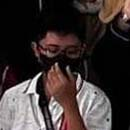
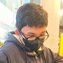

Gecko-inspired adhesive mechanisms rely on the millions of hair-like structures called setae that cover the footpads of geckos. Each seta is approximately 100 nanometers in diameter and ends in hundreds of smaller branches called spatulae, which create a large surface area for contact with the surface (Autumn et al., 2002). The high surface area allows for the utilization of van der Waals forces, which are weak intermolecular forces that arise when two surfaces come into close contact, enabling geckos to cling to surfaces with incredible strength relative to their body weight (Autumn et al., 2002; Niewiarowski et al., 2008).
Van der Waals forces are the primary adhesion mechanism used by geckos to climb vertical surfaces and cling to ceilings. These forces are created due to the interaction of electron clouds on the gecko's setae and the surface it is climbing on, and are proportional to the surface area of contact between the two surfaces (Autumn et al., 2002). The setae on the gecko's footpad are believed to be critical to the strength of these forces, as they increase the surface area of contact and create a high density of van der Waals interactions (Autumn et al., 2000).
The physics behind gecko-inspired adhesives is based on the principles of contact mechanics and intermolecular forces. When the adhesive comes into contact with a surface, the setae hairs conform to the surface and create a large contact area, which allows for strong adhesion through Van der Waals interactions. The adhesive can be designed to have different properties, such as stiffness and compliance, to optimize the adhesion for specific applications.
Gecko-inspired adhesive mechanisms have been used in a wide range of real-world applications, from robotics and manufacturing to biomedical devices and space exploration. One notable example is the development of gecko-inspired adhesive tapes that can be used for gripping and lifting objects, such as heavy boxes or glass panels. These tapes have been shown to be strong, durable, and reusable, making them a promising alternative to traditional adhesives. Other applications of gecko-inspired adhesives include climbing robots, medical implants, and even astronaut gloves.
Geckos are renowned for their distinctive adhesive mechanism that facilitates their locomotion on a range of surfaces, even upside down. This extraordinary capability has been the impetus behind the development of non-harmful adhesives based on micro- and nano-scale structures, which can be utilized across diverse substrates, rendering them optimal for deployment in robotics. Such gecko-inspired adhesives enable robots to effortlessly scale vertical terrains including ceilings or outer space. These innovative technologies have found numerous practical applications such as scrutinizing and maintaining tall constructions like skyscrapers or bridges. In addition to enhancing robotic mobility by enabling movement and scaling over varied surfaces – including vertical ones – these adhesives hold tremendous potential when it comes to conducting search-and-rescue operations within areas affected by disasters where conventional robots may struggle with navigation challenges. Moreover, the gecko-inspired adhesive has potential in the creation of pliable robots that emulate the suppleness and agility of human limbs. This quality renders them advantageous for aiding medical procedures or recuperative workouts within healthcare domains. Furthermore, their non-hazardous composition and ability to be reused make them adaptable to a variety of robotic functions including examination and upkeep tasks. As technology progresses, it is predicted that original and stimulating uses for gecko-inspired adhesives in robotics will emerge.
Sikdar, S.; Rahman, M.H.; Siddaiah, A.; Menezes, P.L. Gecko-Inspired Adhesive Mechanisms and Adhesives for Robots—A Review. Robotics 2022, 11, 143. https://doi.org/10.3390/ robotics11060143
Zhou, M., Pesika, N., Zeng, H., Tian, Y., & Israelachvili, J. (2013). Recent advances in gecko adhesion and friction mechanisms and development of gecko-inspired dry adhesive surfaces. https://dc.tsinghuajournals.com/cgi/viewcontent.cgi?article=1010&context=friction
Our Team
Why people choose us

